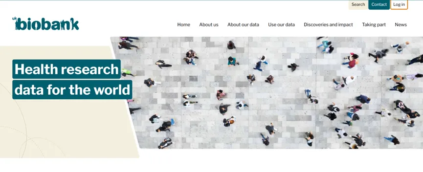
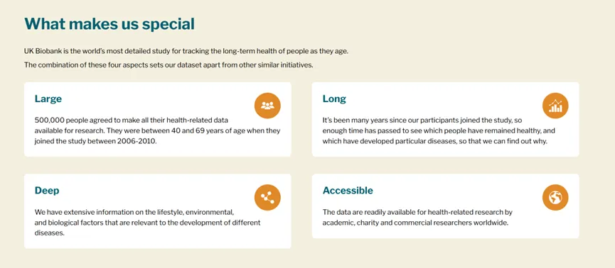
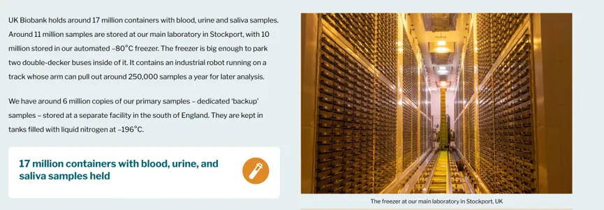
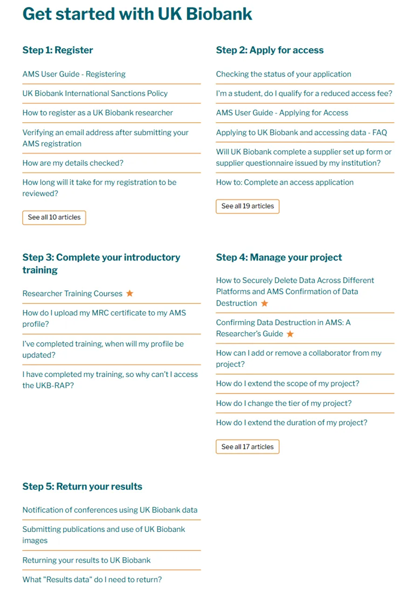
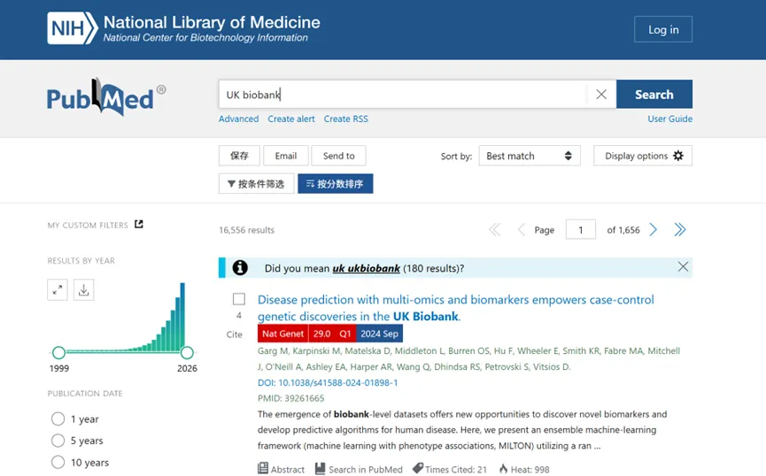
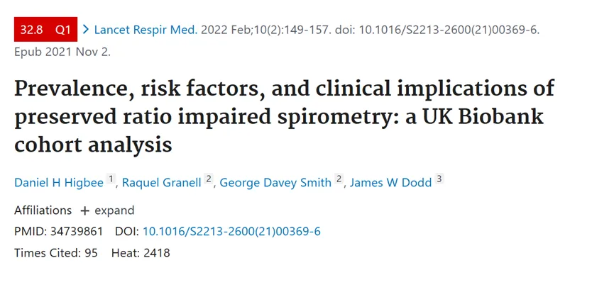
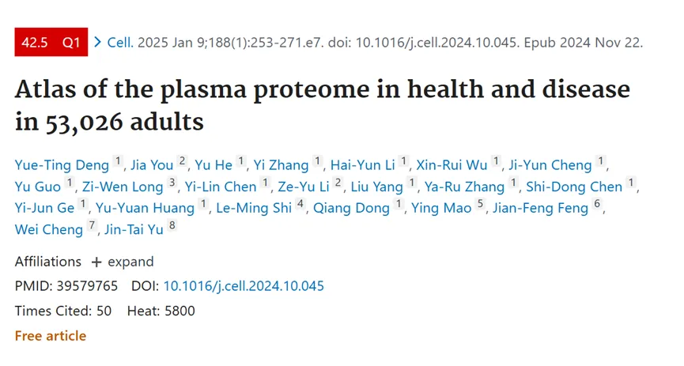
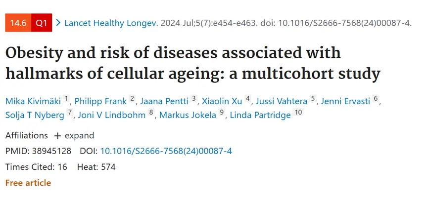

不会还有临床人不知道UK Biobank数据库吧
原文：https://mp.weixin.qq.com/s?__biz=MzAwMzIzOTk5OQ==&mid=2247535511&idx=1&sn=5dededdaf603a0b8ecfd51f04aa0a462&chksm=9b3c32c7ac4bbbd171101ee2f5f9b2f323610b43cf957b2ac39ce7049a2f5407c215b5271478#rd 合集：文献速递
数据库介绍

继续帮大家整理数据库，此前内容可参考：
《一文学会单细胞实验标准数据库使用》《一文掌握十个单细胞数据库》《在TCGA数据库里挖呀挖呀挖》
** **
本次介绍的 UK Biobank（英国生物样本库）是一个大型的、长期的健康研究项目。它成立于2006年，旨在收集和存储来自英国各地大约50万名参与者的信息和生物样本、组学数据，以帮助科学家更好地了解疾病的发生、发展以及健康状况的维持，并持续更新数据集。
UK biobank（https://www.ukbiobank.ac.uk/）


参与者年龄主要在40 - 69岁之间，来自英国的各个地区，涵盖了不同的种族、社会经济背景等，以确保样本的多样性。主要收集病史（如是否有慢性疾病，像糖尿病、心血管疾病等）、家族病史、药物使用情况等 健康信息；饮食习惯（如每日摄入的食物种类、数量等）、运动情况（如每周运动的频率、运动类型和持续时间）、吸烟和饮酒情况等生活方式信息和采集参与者的血液、尿液和唾液样本。

UK Biobank的数据和样本为研究多种疾病，药物研发和公共卫生政策制定都提供了宝贵资源。UK Biobank的数据和样本对全球的科研人员开放，经过严格的审批程序后，研究人员可以申请使用这些数据和样本进行研究。
如何申请使用UK Biobank
第1步：UKB账号申请：
KB官网（https://www.ukbiobank.ac.uk/）点击上部的”Researcher login“，再点击链接中的”Sign up to access UK Biobank resources“，输入相关信息，完成后会收到账号激活的邮件。
第2步：申请UKB项目及数据使用权限：
UKB数据的使用需要依托项目申请。这需要申请人事先准备好研究项目的Proposal。登录AMS系统后，点击Applications --> Start New Application，根据要求填写Proposal。
第3步：提交数据使用协议：
申请获批后，UKB的工作人员会以电子邮件通知。申请人需要根据要求填写数据使用协议并付费。

截至目前，在 PubMed 数据库中使用UK BioBank作为检索词，可以发现使用该数据库发表的学术论文已经高达16556项，其中不乏医学顶级期刊 Nat Genet，Lancet、JAMA 及其子刊。

根据研究内容大致可分为基因与疾病的关系、基因与环境的交互作用对疾病的影响、影像学研究、AI分析以及新型冠状病毒肺炎（COVID-19）等研究方向。
案例一：
聚焦老龄化、代谢性疾病等重大公共卫生问题，选择临床易获取的暴露指标（如脂质、炎症），通过长期随访验证其与疾病风险的关联。在研究设计中，充分考虑混杂因素，包括社会人口学因素、生活方式、环境因素等，以确保结果的可靠性。统计分析方面，采用Kaplan - Meier生存曲线可视化不同组别的累积风险差异；运用Cox比例风险模型或Logistic回归模型评估暴露指标与结局的关联，并对混杂因素进行校正；借助限制性立方样条模型量化暴露与结局的剂量 - 反应关系；同时开展亚组分析，以评估研究结果的稳健性，并检验变量间的交互作用。

案例二:
整合多组学数据。例如有文章借助UKB的蛋白组学数据，首次构建了一个覆盖数万人的系统性“血浆蛋白组图谱”资源库，既展示了健康状态下蛋白表达的参考范围，也描绘了其在不同疾病中的变化轨迹。有助于以下领域发展：1.疾病早筛与预测模型构建；2.个体化健康风险评估；3.新型生物标志物和药物靶点发现；4.遗传与环境因素对蛋白表达的调控机制研究。

案例三:
研究聚焦肥胖是否增加与细胞衰老标志相关疾病风险。研究纳入英国生物样本库（UK Biobank）38 - 72岁人群及芬兰公共部门研究和芬兰健康与社会支持研究中40岁或以上人群的数据，随访观察与九种衰老标志相关的83种疾病。结果显示，在英国生物样本库中，肥胖（BMI≥30.0 kg/m²）参与者与健康体重（BMI 18.5 - 24.9 kg/m²）参与者相比，首次出现标志相关疾病的危险比为1.40（95% CI 1.38 - 1.41），且在芬兰队列中得到验证。肥胖人群45 - 60%的超额死亡率可归因于标志相关疾病。结论是肥胖可能在与细胞衰老相关的疾病发展中起重要作用，解决衰老机制可能有助于减少肥胖流行病导致的疾病和死亡负担。

写在最后：
看到这里，大家有没有越来越了解UKB，其丰富的纵向数据以及与健康记录的链接，为深入探究疾病机制其丰富的纵向数据以及与健康记录的链接，为深入探究疾病机制、风险因素及潜在治疗靶点提供了极具价值的参考，大家快去试试吧。

如何联系我们

 留一个领取资料、开箱即用的单细胞分析镜像的微信号[Biomamba_zhushou]，方便各位随时交流。同时我们也构建了交流群矩阵，欢迎大家入群讨论。
大家可以阅读完这几篇之后添加给生信入门初学者的小贴士
没有检索，就没有发言权
留一个领取资料、开箱即用的单细胞分析镜像的微信号[Biomamba_zhushou]，方便各位随时交流。同时我们也构建了交流群矩阵，欢迎大家入群讨论。
大家可以阅读完这几篇之后添加给生信入门初学者的小贴士
没有检索，就没有发言权
已有生信基地联系方式的同学无需重复添加

 您点的每个赞和在看，我都认真当成了喜欢
您点的每个赞和在看，我都认真当成了喜欢